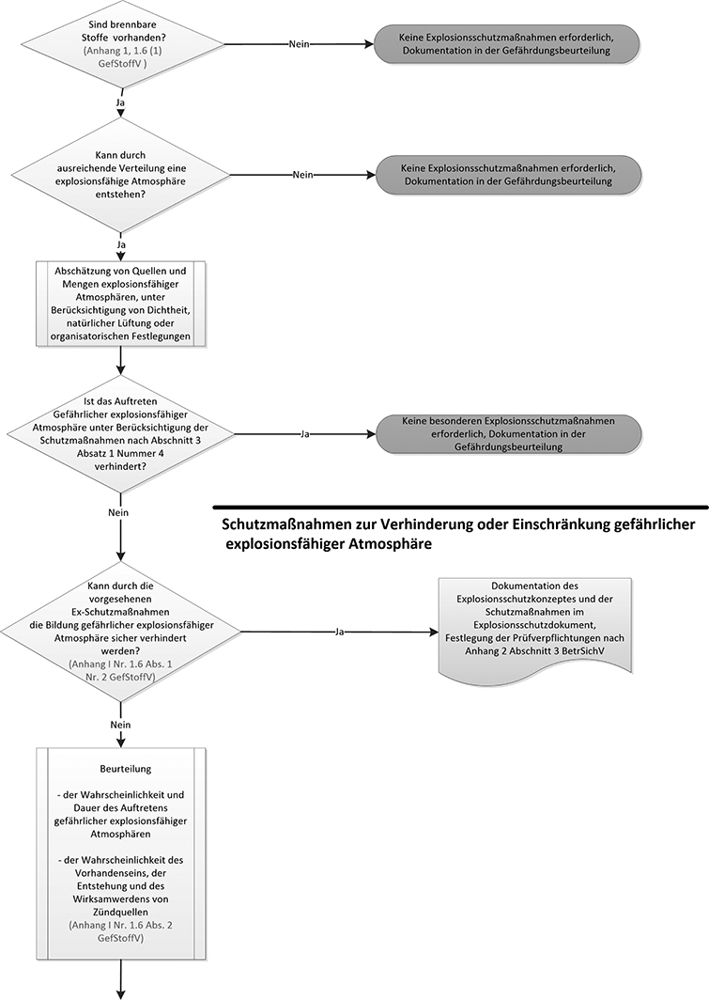
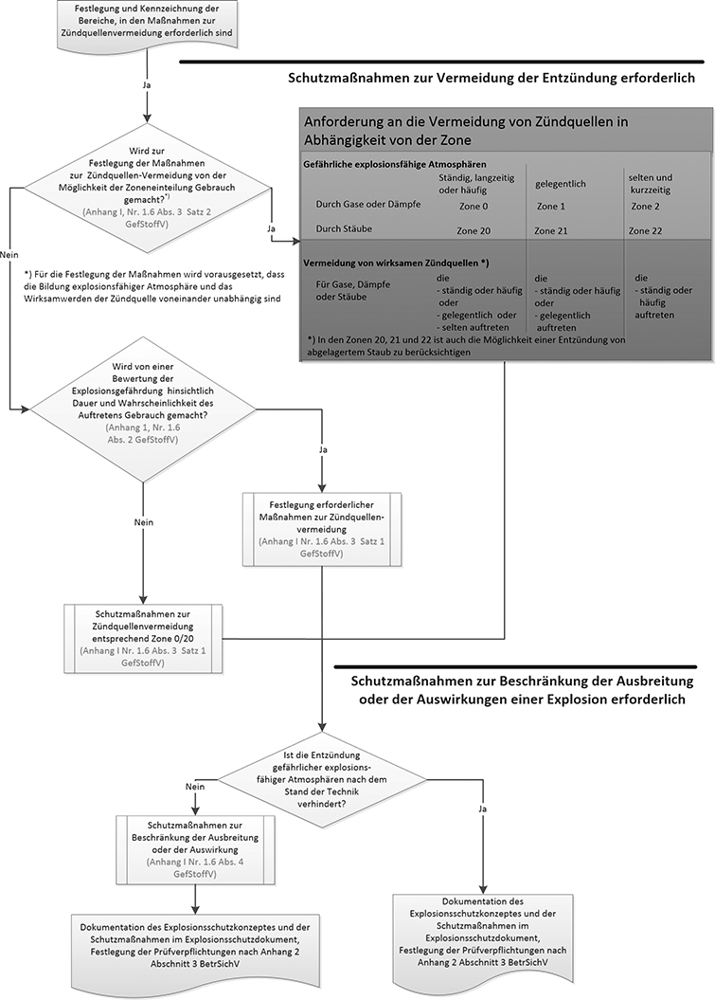

3 Vorgehensweise für die Beurteilung und Vermeidung von Explosionsgefährdungen bei atmosphärischen Bedingungen
(1) Im Rahmen seiner Verpflichtung nach § 5 ArbSchG in Verbindung mit § 6 Absatz 8 GefStoffV hat der Arbeitgeber die Gefährdung seiner Beschäftigten durch Explosionen zu ermitteln, zu beurteilen und die notwendigen Schutzmaßnahmen abzuleiten. Die allgemeine Vorgehensweise ist im Ablaufdiagramm in Abbildung 1 gezeigt. Dabei sind die folgenden Gesichtspunkte in der genannten Reihenfolge zu beachten:
- Es ist zu prüfen, ob brennbare feste, flüssige, gasförmige oder staubförmige Stoffe betriebsmäßig vorhanden sind oder unter den in Betracht zu ziehenden Betriebszuständen gebildet werden können. Siehe hierzu TRGS 721. Ist dies nicht der Fall, wird dies in der Gefährdungsbeurteilung dokumentiert und es sind keine Explosionsschutzmaßnahmen erforderlich.
- Wenn gemäß Nummer 1 brennbare Stoffe betriebsmäßig vorhanden sind oder gebildet werden können, muss festgestellt werden, ob nach Art des Auftretens dieser brennbaren Stoffe mit der Bildung explosionsfähiger Atmosphäre zu rechnen ist. Siehe hierzu TRGS 721.
- Es ist zu prüfen, ob Stoffe eingesetzt werden können, die keine explosionsfähige Atmosphäre bilden können. Werden ausschließlich Stoffe eingesetzt, die keine explosionsfähige Atmosphäre bilden können, wird dies in der Gefährdungsbeurteilung dokumentiert, und es sind keine Explosionsschutzmaßnahmen erforderlich.
- Es ist zu beurteilen, ob unter Berücksichtigung
| a) | passiver technischer Maßnahmen, wie z. B. Dichtheit von Behältern oder Anlagen, |
| b) | organisatorischer Maßnahmen, wie z. B. Beseitigung von Staubablagerungen, oder |
| c) | natürlicher Lüftung |
sicher verhindert ist, dass gefährliche explosionsfähige Atmosphäre auftreten kann. Ist das Auftreten einer gefährlichen explosionsfähigen Atmosphäre dadurch sicher verhindert, wird dies in der Gefährdungsbeurteilung dokumentiert und es sind keine weiteren Explosionsschutzmaßnahmen erforderlich. Eine besondere Prüfverpflichtung nach Anhang 2 Abschnitt 3 BetrSichV besteht nicht.
- Es ist zu beurteilen, ob durch aktive technische Schutzmaßnahmen, wie z. B. eine technische Lüftung oder sicherheitsrelevante MSR-Einrichtungen im Sinne der TRGS 725, das Auftreten einer gefährlichen explosionsfähigen Atmosphäre sicher verhindert ist (zu den Schutzmaßnahmen siehe TRGS 722 bzw. 725).
- Wenn durch die getroffenen besonderen Schutzmaßnahmen das Auftreten explosionsfähiger Atmosphäre in einer gefahrdrohenden Menge sicher verhindert ist, sind keine weiteren Schutzmaßnahmen erforderlich.
- Ist das Auftreten einer gefährlichen explosionsfähigen Atmosphäre nicht sicher verhindert, sind die Wahrscheinlichkeit und Dauer des Auftretens gefährlicher xplosionsfähiger Atmosphären und die Wahrscheinlichkeit des Vorhandenseins, der Entstehung und des Wirksamwerdens von Zündquellen zu bewerten.
- Die Bereiche, in denen Maßnahmen zur Zündquellenvermeidung erforderlich sind, sind festzulegen und nach Anhang 1 Nummer 1.6 Absatz 5 GefStoffV zu kennzeichnen.
- Für die Festlegung von Maßnahmen zur Zündquellenvermeidung wird vorausgesetzt, dass das Auftreten gefährlicher explosionsfähiger Atmosphäre und das Wirksamwerden der Zündquelle voneinander unabhängig sind. Die Fälle, in denen keine Unabhängigkeit zwischen dem Auftreten der gefährlichen explosionsfähigen Atmosphäre und der Zündquelle gegeben ist, erfordern in der Regel Maßnahmen des konstruktiven Explosionsschutzes oder eine Konzeptänderung, die in einer gesonderten Betrachtung festzulegen sind.
- Zur Festlegung der Maßnahmen zur Zündquellenvermeidung besteht die Möglichkeit, explosionsgefährdete Bereiche in Zonen einzuteilen.
- Werden explosionsgefährdete Bereiche nicht in Zonen eingeteilt, ist bei der Festlegung der Schutzmaßnahmen von einer ständig vorhandenen gefährlichen explosionsfähigen Atmosphäre auszugehen und es sind Schutzmaßnahmen im Sinne der Zone 0 bzw. 20 zu treffen, sofern in der Gefährdungsbeurteilung für den Einzelfall nichts Anderes festgelegt ist, z. B. bei Tätigkeiten gemäß TRGS 507.
- Für die Bereiche nach Nummer 8 werden Maßnahmen zur Zündquellenvermeidung entsprechend Anhang 1 Nummer 1.8 GefStoffV festgelegt.
- Ist nach Festlegung der Maßnahmen die Entzündung einer gefährlichen explosionsfähigen Atmosphäre nicht sicher verhindert, sind Schutzmaßnahmen zur Beschränkung der Ausbreitung oder der Auswirkung der Explosion zu treffen.
(2) Maßnahmen zur Vermeidung gefährlicher explosionsfähiger Atmosphären sind sicherheitstechnisch Vorrang zu geben. Es ist deshalb zunächst zu überlegen, ob und wie weit diese Maßnahmen sinnvoll angewendet werden können. Führt diese Überlegung nicht zu einer befriedigenden Lösung, so sind Schutzmaßnahmen gemäß Absatz 1 zur Vermeidung der Entzündung oder zur Beschränkung der Auswirkungen anzuwenden.
(3) Die erforderlichen Explosionsschutzmaßnahmen nach Absatz 1 Nummer 5 bis 13 müssen im Rahmen eines in sich widerspruchsfreien Explosionsschutzkonzeptes ausgewählt und bewertet werden.
(4) Für die getroffenen besonderen Schutzmaßnahmen nach Absatz 1 Nummer 5 bis 13 besteht eine Prüfverpflichtung nach Anhang 2 Abschnitt 3 BetrSichV.
(5) Die Ergebnisse der Gefährdungsbeurteilung sind nach § 6 Absatz 9 GefStoffV zu dokumentieren (Explosionsschutzdokument).
(6) Der Prozess der Gefährdungsbeurteilung ist für den Fall der das übliche Maß nicht überschreitenden Auswirkungen einer Explosion in Abbildung 1 in Form eines Ablaufdiagramms grafisch dargestellt.


Abbildung 1: Bewertung der Explosionsgefährdung und Festlegung von Schutzmaßnahmen unter atmosphärischen Bedingungen